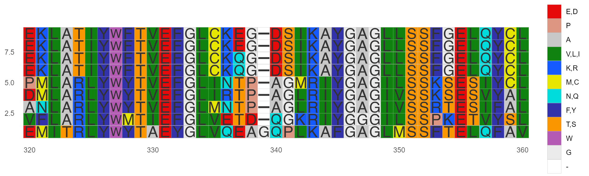
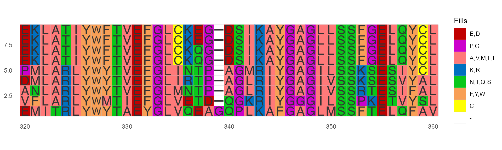
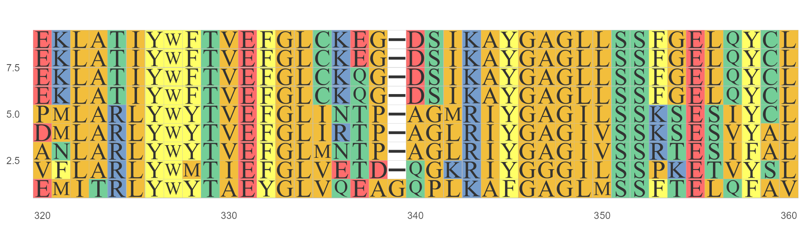
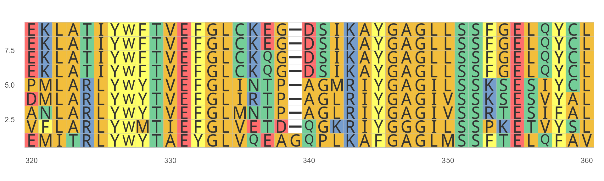

Color Schemes and Font Families
2021-09-22
Color_schemes_And_Font_Families.RmdColour Schemes
Several classic color schemes for MSA are shipped in the package. In the same ways, you can use available_volor() to list color schemes currently available. Note that Amino acids and nucleotides have different color schemes.

Clustal X Colour Scheme
This is an emulation of the default colors cheme used for alignments in Clustal X, a graphical interface for the ClustalW multiple sequence alignment program. Each residue in the alignment is assigned a color if the amino acid profile of the alignment at that position meets some minimum criteria specific for the residue type.
ggmsa(protein_sequences, start = 320, end = 360, color = "Clustal", show.legend = TRUE)
Color by Chemistry(Default)
Amino acids are colored according to their side-chain chemistry:
ggmsa(protein_sequences, start = 320, end = 360, color = "Chemistry_AA", show.legend = TRUE)
Color by Shapely
This color scheme matches the RasMol amino acid and RasMol nucleotide color schemes, which are, in turn, based on Robert Fletterick’s “Shapely models”.
ggmsa(protein_sequences, start = 320, end = 360, color = "Shapely_AA", show.legend = TRUE)
Color by Taylor
This color scheme is taken from Taylor and is also used in JalView.
ggmsa(protein_sequences, start = 320, end = 360, color = "Taylor_AA", show.legend = TRUE)
Color by Zappo
This scheme colors residues according to their physicochemical properties, and is also used in JalView.
ggmsa(protein_sequences, start = 320, end = 360, color = "Zappo_AA", show.legend = TRUE)
Color by LETTER
Thanks to ShixiangWang for the color scheme suggestions.
https://en.wikipedia.org/wiki/Help:Distinguishable_colors
ggmsa(protein_sequences, start = 320, end = 360, color = "LETTER", show.legend = TRUE)
Color Customzation
Customizing the color scheme is allowed. Users can create a data frame with two columns named names and color. This data frame includes symbols of character and coloring code (see below).
library(RColorBrewer)
library(pals)
protein_sequences <- system.file("extdata", "sample.fasta", package = "ggmsa")
my_pal <- colorRampPalette(rev(brewer.pal(n = 9, name = "Reds")))
my_cutstom <- data.frame(names = c(LETTERS[1:26],"-"),
color = my_pal(27),
stringsAsFactors = FALSE)
head(my_cutstom)
#> names color
#> 1 A #67000D
#> 2 B #7A040F
#> 3 C #8D0911
#> 4 D #A00D14
#> 5 E #AD1116
#> 6 F #B91319
pals::pal.bands(my_cutstom$color)
ggmsa(protein_sequences, 300, 345,
custom_color = my_cutstom,
char_width = 0.5,
border = "white",
show.legend = TRUE)
Font Families
Several classic font fors MSA are shipped in the package. In the same ways, you can use available_fonts() to list font currently available
available_fonts()
#> font families currently available:
#> helvetical mono TimesNewRoman DroidSansMono
ggmsa(protein_sequences, start = 320, end = 360, font = "helvetical")
ggmsa(protein_sequences, start = 320, end = 360, font = "TimesNewRoman")
ggmsa(protein_sequences, start = 320, end = 360, font = "DroidSansMono")
If specify font = NULL, only show colored blocks but not characters.
ggmsa(protein_sequences, start = 320, end = 360, font = NULL)